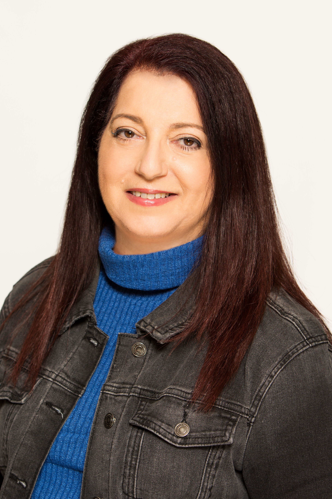
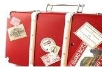

על טליה
פלד-נתנאל טליה סופרת, יוצרת תוכן, מתרגמת, עורכת ובלוגרית היא בוגרת בית הספר לעיתונאות באוניברסיטת תל אביב בעלת נסיון של שנים רבות בכתיבת תוכן לאסטרטגיה שיווקית עד כה יצאו לאור שניים מספריה: "איש הזכוכית" ו"חקוקה באבן" הספר השלישי בכתיבה בימים אלו כרגע עובדת על תרגומם של ספריה והפיכתם לתסריט עוסקת בתרגום לתחום הוואב לוקליזישון לחברות המובילות בעולם ההיי טק בלוגרית מצליחה המוכרת ברשת בשם "אחת שנוסעת" נשואה לעודד ואמא לאורנית וניר מתגוררת במודיעין.
עקבו אחרי
פוסטים אחרונים
מסתתרת
במשך הרבה מאוד שנים הסתתרתי בפייסבוק. זה נשמע מגוחך שמישהו יחליט להסתתר דווקא במקום שכולם אמורים לראות אותו. שהרי כולם משתפים, מעלים תמונות, חיים באופן פתוח. אבל אני בחרתי בכינוי “אחת שנוסעת” בעברית, מי שהכיר וידע זיהה בתמונה, ביקש או אישר חברות. ואילו לאחרים הייתי לא נודעת. סתם “אחת שנוסעת”. כששאלו אותי למה אני מסתתרת, הסברתי שזו היתה דרכי להפריד במידת מה בין העיסקי לפרטי. בין החיים כאן בארץ, לחיים שניהלתי במקום אחר, באפריקה ובעיקר בניגריה. לא אלו לא היו חיים סודיים אבל הם בהחלט היו חיים אחרים. וגם לא תמיד הצלחתי להסתתר מכולם שהרי מי שיסתכל בפרופיל הפייסבוק שלי ימצא שיש לי אי אלו חברים שאינם…איך נגדיר את זה? מקומיים (כלומר לא ממקומותנו אנו). כן היו כמה מלקוחותי וקשרי העסקיים שהלכו וחרשו את האינטרנט, זיהו אותי לפי התמונה וביקשו חברות. מה יכולתי לעשות? ברור שאישרתי אותם. שלום, שמי טליה פלד-נתנאל ובמשך יותר מעשור נסעתי לעיתים תכופות לאפריקה. כאשר אני משאירה מאחור את בעלי וילדי למשך כמה ימים בחודש. בתחילה, כדי לנהל מערך מכירות ואחר כך חברה מקומית באפריקה, בתחום התקשורת הלווינית. כמעט תמיד כשסיפרתי מה אני עושה למחייתי נתקלתי באותה תגובה של הרמת גבה.מודה גם לי בהתחלה זה נשמע מסובך. אישה לבנה, ישראלית, נוסעת לאפריקה ניגריה כדי לעשות עסקים. אחרי הרמת הגבה לרוב התחילו השאלות ובראשן: מה זה לא מסוכן? איך את מסתדרת? וכו’ לא התפלאתי על השאלות הללו כי אני זוכרת איך זמן מה לפני שהתחלתי את ה”רומן” שלי עם ניגריה ניהלתי מערך מכירות באחת החברות, ולבקשתו של ישראלי שבבעלותו היתה באותה עת חברה ניגרית. שלחתי את אחת מנשות המכירות שלי שחזרה וסיפרה לי בדיסקרטיות על הצעת עבודה שקיבלה ממנו . “השתגעת?” אמרתי לה, “ניגריה”? שנה מאוחר יותר מצאתי את עצמי נוחתת שם ומגלה שניגריה היא אחרת מכל מה שחשבתי. לא אין שם ג’ונגלים וחיות פרא, כי המקומיים אכלו את כל חיות הבר .לעומת זאת יש כן ביניינים המתנוססים לגובה. גשרים ארוכים שחוצים את הימה. אבל כשיורד הגשם וניתך בעוז,בעונת הגשמים שנמשכת כחצי שנה בערך. לרוב הרחובות מוצפים כהוגן, ואז אתה גם מבין שהתשתית שניבנתה לא בדיוק עושה את העבודה.הניגרים עצמם יבואו לפגוש אותך בפגישות עסקיות לרוב כשהם עוטים חליפה ועניבה, גם אם בחוץ שורר חום של יותר משלושים מעלות והלחות מרקיעה שחקים. בקיצור ארץ עם הרבה ניגודים ושינויים. אני מקווה בבלוג הזה לספר קצת על חוויותי ועל נסיוני מתוך תקווה לסייע למי שמעוניין לעשות עסקים ביבשת השחורה. אני תמיד טוענת שמי שמגיע לניגריה או לאפריקה בכלל בפעם הראשונה בעצם לא ממש מבין לאן הגיע. בהתחלה זה נראה לך מה זה סבבה. יש מקומות שאפילו מזכירים קצת את מה שראית בטלויזיה על אפריקה ואתה מרגיש מאותגר, מנסה להגיד לעצמך שתוך כמה ימים הכל יסתדר ואתה תחזור לצביליזציה שאתה מכיר ולשפיות הידועה. אבל רק בפעם השנייה שאתה מגיע למקום הזה, אתה בעצם מחליט בתוכך אם מתאים לך להישאר שם או שאתה מעדיף שכף רגלך לעולם לא תדרוך ביבשת הזאת יותר. אז הנה בואו אספר לכם על הפעם הראשונה שנסעתי ליבשת השחורה ולניגריה. נחתנו בלאגוס בערבו של יום ראשון מהביל. שותפי למסע היה למוד נסיון כבר’ כי הוא חי שם כמה שנים. אבל אני הגעתי לתמוך בו בתערוכה שהיתה אמורה להתקיים באבוג’ה יומיים מאוחר יותר. ואכן למחרת נסענו לשדה התעופה המקומי כדי לטוס לאבוג’ה. אני חייבת לציין שמדובר בשדה התעופה הישן בלאגוס, שמאז כבר חודש אף הוא. אבל באותם ימים באמת המקום נדמה לאיזה מחסן מהוה עם מערכת כריזה מרשרשת. את המזוודות שלנו שקלו במאזני אדם. ולאחר השקילה החל דין ודברים לגבי העלות שיש לשלם עבור המזוודה. משהבין הניגרי שלפנינו כי אנחנו לא הולכים לוותר התקפל, לקח את המזוודות פנימה והסכים למחיר שהצענו לו. עמדנו בטבורו של אולם הנוסעים ופגשנו עוד חבורה של ישראלים שטסו ליעד אחר. מערכת הכריזה המרשרשת מפעם לפעם השמיעה קריאה לא ברורה. לבסוף פענחנו כי הטיסה שלנו עומדת לצאת וצעדנו עם נוסעים נוספים לכיוון מטוס הסילון. נעמדנו בתור עורפי ואחד מעובדי השדה ניגש אלינו עם מחורר שהזכיר לי את מה שנהגי האוטובוס השתמשו בו בשעתו לכרטיסיות בימים שנסעתי לביה”ס באוטובוס (רמז זה היה ממזמן) הגשתי לו את כרטיס הטיסה שלי והוא הביט בי בפליאה. “גברתי”, הוא אמר לי, “הטיסה הזאת יוצאת לקדונה ואילו הכרטיס שלך הוא לאבוג’ה”?!!! “כן”, אמרתי לו, “אני צריכה להגיע לאבוג’ה. מה עם הטיסה לאבוג’ה”? הוא הביט בי ברחמים ואמר: “נסעה כבר ממזמן…”. הסתבר שאני ושותפי למסע לא פענחנו נכון את רישרושי מערכת הכריזה. אבל הניגרי שממולי התעשת מאוד, והציע פתרון. “אנחנו נסיע אתכם בין המטוסים ונמצא טיסה חליפית שטסה לאבוג’ה”. ואכן כך היה הועמסנו על אחד הג’יפים, וכשהרוח מבדרת את שערותנו נסענו בין המטוסים שמתכוננים לטוס. עובדי השדה צרחו לטייסים בקוקפיט לאן הם טסים, ואלו השיבו להם בחזור בצרחות. לבסוף, הצלחנו ברגע האחרון לפני שנסגרה הדלת באחת הטיסות “לתפוס טרמפ” ולטוס לאבוג’ה. מאותה הפעם למדתי שמרפי מאוד חזק באפריקה ושאי אפשר לתכנן או לדעת מה יקרה. פגישות שנקבעו הן טנטטיביות במקרה הטוב, כי תמיד קיימת אפשרות שמזג האויר או התנועה יפריעו לך לקיים אותן. טיסות יכולות להתעכב או להשתבש. ולכן מומלץ לארוז לצד הבגדים הארוכים (כן שרוולים זה חשוב כי יש יתושים נושאי מלריה) גם הרבה סבלנות, קור רוח ומידה לא מבוטלת של יצירתיות. ובאשר לפייסבוק, ובכן בתחילה סברתי שלא מדובר בכלי שיכול לסייע לי בעסקים ולכן לא הפריע לי שהפרופיל שלי יהיה נסתר. אבל עם הזמן הבנתי שפייסבוק חשוב הוא הופך אותך לנגיש יותר ואישי יותר לכולם גם ללקוחות. שהרי בסופו של יום עסקים נעשים בין אנשים ולא בין חברות. וככל שלומדים להכיר את הלקוחות טוב יותר ומאפשרים להם להכיר אותך העסקים פורחים..
חולץ פקקים

הספירה לאחור אצלנו בבית כבר החלה. עוד מספר שבועות יסתיים החופש הגדול ואז זה יתחיל. נחיל הפקקים בכבישי ארצנו עשוי להתחדש. לשימחתי בשנים האחרונות החלפתי את מקום עבודתי, והמקום היחידי שאני צריכה לנווט אליו הוא שולחן העבודה בבית שלי. אבל, נראה לי שאני יכולה להציע איזו נחמה קלה למי מכם שעתיד להתקע בפקקים, ולתת לו חומר למחשבה, בכך שאתאר כאן מה זה אומר פקקי תנועה בניגריה. המקומיים קוראים לזה “גוסלו” שזה שיבוש של המשפט “גו סלוואו” כלומר הולך לאט באנגלית. כדי להסביר את משמעות הפקקים אולי כדאי גם לתאר במה מדובר. בקיצור רוב העם הניגרי “עמך” שוכן בלאגוס ביבשת, מה שנקרא בפי המקומיים “מיינלנד”. לעומת זאת מרכז העסקים של העיר יושב על האי ויקטוריה שכדי להגיע אליו יש לחצות אחד משלושה גשרים המובילים למקום: גשר אקו, גשר קרטר או גשר היבשת השלישי. כל אחד מהגשרים הללו בנוי לתפארת מעל ימה מאוד רחבה. אבל, כמות האנשים והמכוניות שעליהם אינה תואמת את הקיבולת שגשר כזה יכול להכיל בשעות העומס. ולכן, רוב האנשים שעובדים באי ויקטוריה (ושלרוב אינם לבנים) נוסעים למקום עבודתם בו. הם משכימים קום בארבע או חמש לפנות בוקר, ומבלים כשלוש עד ארבע שעות בפקקים, עד שהם מגיעים למקום עבודתם בשעה תשע בה מתחיל יום העבודה. בשעה חמש או שש משמסתיים יום העבודה אותו נחיל מכוניות עושה את דרכו חזרה לתוך המיינלד כדי לחזור הביתה בסביבות תשע או עשר בלילה. יש לציין שהלבנים או הניגרים העשירים, לרוב מתגוררים בהמשכו של האי ויקטוריה. באדמת לשון הנכנסת לתוך הימה ונקראת לייקי, או בתחילת המיילנד בשכונת יוקרה בשם איקואיי. חיים שלמים מתנהלים בתוך הגוסלו. לפעמים מציצות אלייך ידיים לצד חלון המכונית, ואז מתגלה כי לרוב מדובר בקבצן קטוע רגליים שנוסע על עגלת עץ מאולתרת ומבקש נדבה. בכלל מקבצי הנדבות הם משהו שיכול לזעזע, נדמה שכל הנכויות ומוכי השחין התאספו ביחד לצד החלון שלך. ולכן מאוד מומלץ להסיט את המבט. דרך אגב, מאוד לא מומלץ לפתוח את החלון או לשלם נדבות, למרות שהלב נכמר, כי אחריו תגיע כל המשפחה והחמולה שלו לבקש ממך הנדבן הידוע עוד כספים. רוכלים עומדים בצידי הדרך ומציעים את מרכולתם המגוונת. עד כדי כך שלפעמים אתה עומד נפעם ממה שמוצע בשוק הזה. מדברי אוכל ועד…אסלה לשירותים! בחיי לפני כמה שנים נסעתי עם אחת מעמיתותי לעבודה ולתדהמתנו ראינו בחור מסתובב בגוסלו עם אסלה על הכתפיים ומציע אותה לכל דורש. הבחורה ממש התגלגלה מצחוק על רצפת הג’יפ. “מה הוא חשב לעצמו?…” היא גיחכה, “שמישהו ייסע כאן בדרך ויגיד או… בדיוק עכשיו אני צריך אסלה הביתה?” אבל כנראה שבעיר עם מעל עשרים מליון תושבים הכל יכול לקרות, ואולי הוא בכל זאת ימצא את הלקוח המתאים. בשנים האחרונות התחילה אחת מרשתות הרדיו הפופולאריות בניגריה “קול אף אם” לשדר תוכנית המדווחת על עומסי תנועה. מעיין גלגל”צ הניגרי. לא תמיד זה עוזר, אבל במקרים מסויימים הנהג שלי היה משתמש בדיווחי התנועה למצוא את הדרך. בכל מקרה מדובר במקור למוסיקה טובה. כמו כן, בפעמים שכן ניסיתי גיליתי שוויז עובד בניגריה, אבל הנהגים המקומיים המיומנים מצליחים לאתר את המקום שאליו יש להגיע הרבה יותר מהר ממנו. אין ספק כי הפקקים הללו יכולים להוציא אדם מדעתו. לפני כמה שנים התלווה אלי לאחת הנסיעות, מנהל בכיר באחת החברות שייצגתי. הבחור, שהיה לבן והגיע מנמיביה. בא עם גישה של “אני אפריקאי ואפריקה לא מפחידה אותי”. התחלנו את היום שלנו בפגישות עם לקוחות באחד מבתי המלון במיילנד, ובצהריים אף סעדנו שם. לקראת אחר הצהריים פנינו לצאת לפגישה אחרת במשרד של אחד מלקוחותינו, שהיה במרחק סביר מהמקום בו שהינו. לפני שיצאנו לדרך שאלתי אותו מה דעתו על ניגריה והוא שוב ענה לי: “אני אפריקאי, אני רגיל לאפריקה”. ברגע שעלינו על הרחוב הראשי קפצו עלינו שני אנשי חוק. האחת שייכת למה שנקרא “לסמה”, מעין מכווני תנועה עירוניים. והשני שוטר. כנראה שהעובדה כי נסענו שבג’יפ נסעו שני לבנים מאחור, בשעה שמקדימה ישבו הנהג והעוזר הניגרי שלי, הקפיצו אותם מריבצם. אני כבר ראיתי את המבט הזה בעיניים שלהם, המבט שאומר “הנה כסף נוסע לעברי”. בקיצור התחיל ויכוח עם הנהג ועם העוזר שלי לגבי הפנייה שהנהג לקח. השניים שקפצו עלינו טענו שהוא לא אותת, הנהג והעוזר שלי טענו אחרת. הויכוח נמשך שעה ארוכה. אני סימנתי לבחור שישב לצידי לא להתערב. הבנתי שאם נרצה להתערב המחיר שנצטרך לשלם יהיה פשוט גבוה יותר. בסוף אחרי שהאסיסטנט שלי יצא מהאוטו והתחיל לדבר עם הבחורה, והנהג המשיך לדבר עם השוטר בשפת היורבה, הסתיימו הדין והדברים וסוכם המחיר. בינתיים, מצאנו את עצמנו נעקפים על ידי כל העולם ואחותו,וכשכבר פנינו ללכת היינו בסוף הפקק. בהתחלה הבחור שלידי עוד לקח את זה בקלות אבל אז נכנסו לעומק השכונה, והכביש הפך לפחות סלול. השוק ההומה שראינו בצידי הדרך עם כל מה שרק אפשר לחשוב עליו, והגשם הכבד שהתחיל לרדת הוציאו אותו משלוות רוחו. אופנועים, המשמשים כמוניות לאדם אחד (והנקראים אוקדה בלשון המקומיים), החלו עוקפים אותנו מכל הצדדים. הבחנתי באי הנוחות של הבחור. כשעברה שעה וחצי הוא הפטיר: “אבל אמרתם שזה במרחק עשרים דקות מכאן?” כל נוסעי המכונית הנהנו בראשם ואז הצבעתי על בניין בקצה הרחוב ואמרתי לו: “רואה?…. זה שם”. הבחור הביט בי בתדהמה. גשם ירד בחוץ והרחוב היה בוצי. מה שלא איפשר לרדת מהאוטו וללכת ברגל, גם לו רצה בכך. בקיצור, עוד שעה נוספת חלפה ואנחנו עדיין היינו תקועים באותו פקק. בינתיים, שותפי לנסיעה כבר כמעט עשה פליקפלאק לאחור, ונדמה היה לנו שעוד רגע הוא מטפס על קירות הג’יפ. הנהג והעוזר שלי שישבו במושבים הקידמיים, החלו משוחחים ביניהם בשפה המקומית. מאוחר יותר הסתבר לי שהם פשוט התחילו לגחך מול הלחץ של הבחור לעומת קור הרוח שלי. משהגענו ללקוח הבחור הפטיר: “פאק, אני לא חוזר למקום הזה יותר בחיים”. אז כבר אמרנו שלניגריה חוץ משרוולים ארוכים צריך לארוז גם הרבה סבלנות ואורח רוח. ובנוסף, הנה עצה חשובה למי שמתכנן לנסוע ולעשות עסקים בניגריה. תדאגו שתמיד יהיה לכם נהג אמין עם כלי רכב תקין. נהג טוב הוא בבחינת מציל חיים וזאת לא אמירה סתמית. ואם חייכם או כספכם חשוב לכם תדאגו לא לקחת טרמפים עם מי שאתם לא מכירים, ולא לסוע במוניות שירות. אני בדרך כלל שכרתי את שירותיו של נהג ומאחר והייתי אישה דאגתי לסוע בג’יפ. החלונות עדיף שיהיו כהים והדלתות לרוב נעולות. כי אתם לא רוצים לעצור ברמזור או בגוסלו ושחלילה יחטפו אתכם. אז כמו שאמרתי בפעם הבאה בפקק פשוט תחשבו על זה, מה זה עשרים דקות פקק…? בקטנה..